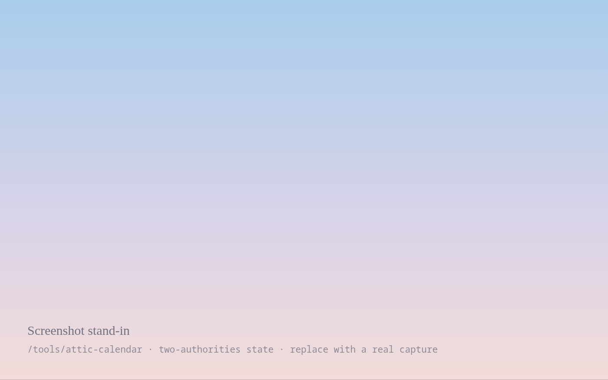

The month that would not open
Two reckonings, two first days, and an instrument that had to learn to say both.
The conjunction fell at 21:07 on a Sunday. The crescent that should have opened Μεταγειτνιών was, that evening, four degrees above a horizon the sun had only just left — technically present, practically invisible, and by the rule the corpus actually uses, not yet a month.
Two rules, one sky
Conjunction reckoning starts the month at a computed instant. Observed-crescent reckoning starts it at the first evening the new moon can be seen from a named place. They agree most months and part company two or three times a year, and when they part company they do not disagree slightly: they disagree by a whole day, and every festival in the month moves with them.
The Athenians did not know the instant of conjunction. They knew whether someone had seen it.
What the page does now
It shows both, marks which one it is counting by, and refuses to pick. Where the two rules give different dates the header carries them side by side rather than resolving to the one I happen to prefer.

/tools/attic-calendar. Neither column is styled as the correct one.The stream where it broke
I found this live, on a Thursday, with about forty people watching me insist the calendar was wrong for eleven minutes before reading my own rule text.
The sky when this was published
Recorded for Athens (GMT+3) at the moment of publication and stored with the entry. Swiss Ephemeris 2.10.03 · Lahiri ayanāṁśa · amānta month naming · Attic date by observed crescent. Never recomputed, so it still says what the sky said.
Continue reading